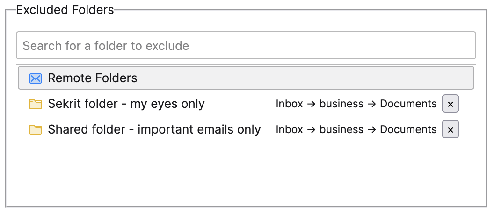
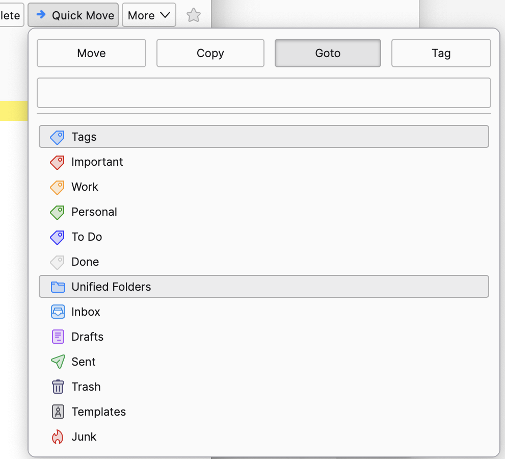
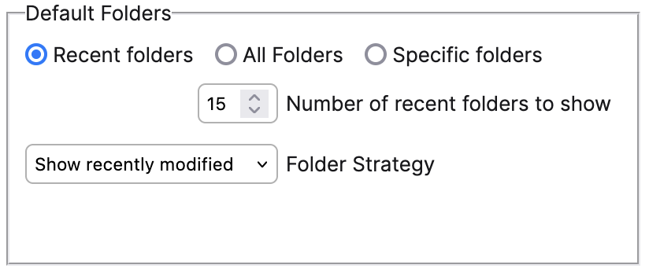

Quick Folder Move—See what's new in 3.0
It all started with a simple idea—I wanted to move my emails a bit faster to make my inbox more manageable. What began as a personal project has grown into a tool that many of you now use as a core part of your email workflow. Knowing that something I created is helping so many people is incredibly satisfying.
If you realize how much this add-on is saving your time, please consider making a donation. Your support motivates me to keep developing new features and fixing issues for everyone.
Exclude Folders You Don't Need
You can now exclude specific folders from the search list, not just the archive folder. This gives you more control over your searches, letting you focus on the folders that matter most to you.
Direct Access to Tag and Unified Folders
Using the "goto" action, you can now jump straight to the Tag and Unified Folder views. This makes it easier to organize your emails by tags or to see all your messages in one place.
Choose How Recent Folders Work
Decide whether the recent folders view shows the folders you've recently viewed or those you've recently moved messages to. This helps you quickly access the folders that fit your workflow.
I've also added a few more features and bugfixes, thanks to reports and requests from users like you.
- Pressing CmdCtrl+Enter when moving a message opens the folder immediately. This saves you a step if you want to check the message you just moved.
- Folders with names including [brackets] are now fully supported, giving you more freedom in naming.
- The currently selected folder is excluded when moving messages to prevent accidental moves.
- Switching between actions now requires pressing CmdCtrl with the arrow keys, freeing up the arrows for navigation within the search bar.
- The folder picker in settings respects the "skip archive" option, showing only the folders you want.
- Lastly, the font size adapts to Thunderbird's settings for a more native feel; you can adjust it anytime in the Thunderbird menu if you prefer.